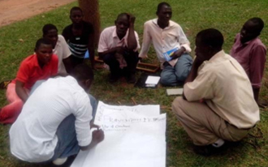
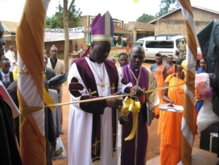
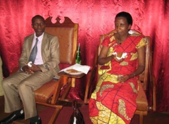
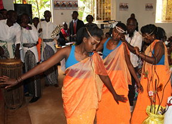
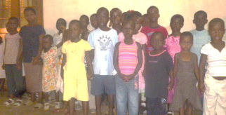

ACTIVITIES

Bible Classes
Through these bible classes we train, prepare and ordain people to
become ministers of the gospel and to spread the gospel of Jesus
Christ through literature and prayer meetings.

Evangelism
We were ordained and commissioned to go out and preach the
gospel, through servant of God Seminars, international Conferences, Crusades and Prayer meetings. Through these gospel outreaches many people have give
their lives to Jesus Christ as Lord and Savior.

Counseling
Through biblical Counselling, you soul is lift up from sallow, spiritual weaknesses, bitterness, unbelief and any devil attacks towards your spirit. For the comforter, comfort us through his word and lead us to his righteousness and truth. John (14 : 16 – 18)

Praise and worship
We provide or facilitate the provision of social services such as relief
to the communities and extend arms of grace to the poor, widow
and HIV/ AIDs victims.

Sunday school
The Bible says that: "Train up a child in the way he should go: and when he is old, he will not depart from it". Proverbs (22:6)
-
1
To function with the overall purpose of carrying on the work of Jesus Christ through mission on any work (Matt 28: 18-20, Matt. 10: 1, 8, John 3:16) -
2
To build partnership with church mission organizations and institutions which are promoting integral human development. -
3
To establish and operate church mission, Bible training Colleges, Public Schools and Social services centers. -
4
To maintain libraries of holy and religious books, periodicals,journals, publications and encourage publication of each book (s). -
5
To build, establish and maintain ministries and place of worship in and outside Uganda. -
6
To propagate the kingdom of God and spread the Gospel of Jesus Christ through evangelism campaign, Christian literature and prayer meetings. -
7
To provide or facilitate the provision of social services such as relief to the communities and extend arms of grace to the poor, widow and HIV/ AIDs victims. -
8
To promote, support and protect the moral character, status and interest of members of the ministry.
About Ministry
World Isoko Ibohora Ministry is a registered non-political and not for profit making ministry operating exclusively for religious, to take care and support orphans, widows and vulnerable peoples in educational, health, benevolent and development purposes. It started in 2009 by three (3) people and currently has members over 23 branches in different areas in Uganda.
Learn More